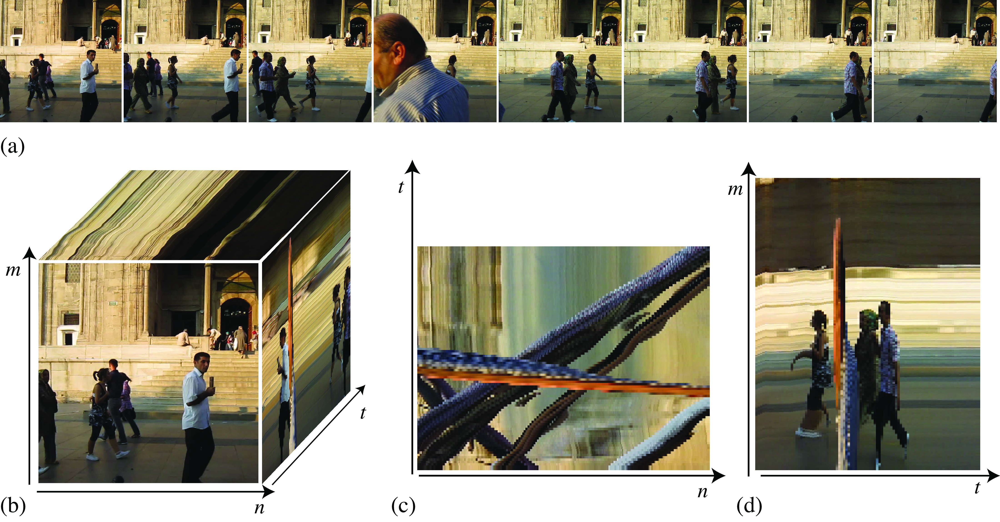

"ToF कैमरा एक ऐसी तकनीक है जो प्रकाश (आमतौर पर infrared light) को किसी वस्तु तक भेजकर और वापस आने में लगे समय को मापकर depth (दूरी) पता करता है।
ToF cameras provide powerful 3D vision capabilities for robotics, industrial automation, drones, and many other applications. However, raw signals from ToF sensors often contain noise caused by ambient light, surface reflectivity, integration limits, and sensor design.
Without correction, these fluctuations create unstable depth maps and jitter in point clouds. Temporal filters solve this problem by smoothing depth values across multiple frames.
Continuous-wave ToF cameras emit modulated infrared light. Each pixel measures the phase difference between emitted and reflected signals. Using the speed of light as a constant, this phase information is converted into depth.
Along with depth data, ToF cameras also generate amplitude maps that indicate signal strength and measurement confidence.
Depth maps can then be converted into 3D point clouds where each pixel becomes a real-world coordinate.
Noise remains present even after optimizing exposure and illumination settings. Longer integration times can reduce random noise, but limitations from sensors and environments still create depth fluctuations.
Temporal filters compare depth values across multiple frames to reduce random variations and improve stability.
Raw depth values of a dark object may fluctuate between 892 mm and 896 mm. After temporal filtering, values become more stable around 893.3 mm to 893.6 mm.
The IIR filter updates every pixel using previous frame information. A small alpha value reduces noise strongly but creates delay, while a larger alpha value reacts faster but allows more noise.
This filter stores multiple frames, sorts pixel values, and selects the median or average value. It removes abnormal measurements and provides strong noise rejection.
Adaptive Mean filtering calculates temporal variation and applies smoothing only when the scene is stable. During fast movement, filtering strength is reduced.
The biggest challenge is motion blur. Because frames are averaged together, fast-moving objects may appear blurred or delayed.
Adaptive filters solve this issue by applying stronger filtering to stable regions and weaker filtering to moving objects.
A ToF processing pipeline starts by tuning illumination, modulation frequency, and exposure settings. After that, temporal filtering improves frame-to-frame stability.
Temporal filters are essential for reliable ToF camera performance. They improve depth accuracy, stabilize point clouds, and make 3D vision systems more practical for real-world applications.